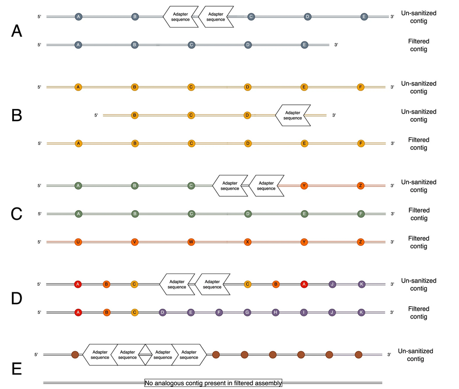
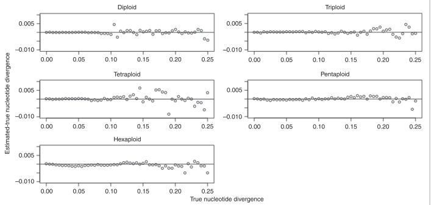
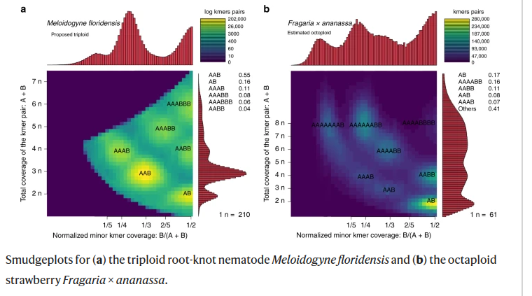
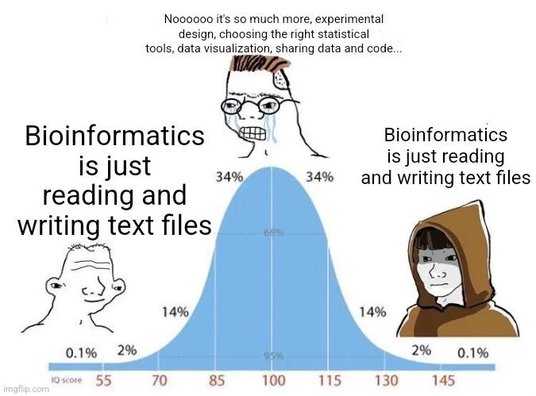

RECAP
Então, basicamente tenho me preparado cada vez mais para um projeto de desenho genômico. E como sabemos, o genôma é extenso e com varias regiões (Proteômica, epigênomica, regiões de silencimento etc). Penso em escrever um pouco mais sobre isso em um post só para discussão de complexidade e aplicações dessa aréa (Aguardem os próximos capitulos do Jomaserver).
Pré-processamento
Porém como devem imaginar, o processo de análise de dados é apenas uma das etapas de todo um sistema da montagem do rascunho do gênoma, ou seja, além do trabalho de bancada, o sequeciamento é realizado por uma empresa de fora. A partir disso, começamos a trabalhar os dados, e como devem imaginar é uma etapa longa e necessaria. O primeiro passo dessa etapa é o pré-processamento desses dados. Nesse momento que entra em ação o HiFiAdapterFilt e o GenomeScope2.
HiFiAdapterFilt
Basicamente, precisamos de adaptadores para o sequenciamento do genoma circular. Tá mas o que essa frase significa exatamente?, O que são esses adaptadores?.
Os adaptadores são pedaços sintéticos de DNA, ligados aos fragmentos genomicos.
Eles têm várias funções, como:
circularizar o DNA, carregar barcodes para multiplexar amostras, fornecer o sítio de ancoragem onde os primers vão se ligar.
Essas regiões precisam ser retiradas na parte do pré-processamento já que não representa o genoma real da planta de interesse e sim um pedaço utilizado previamente na parte de sequenciamento. Quem nós ajuda a fazer isso? HiFiAdapterFilt.

GenomeScope2
Algumas espécies de plantas podem ser poliplóides e heterozigóticas.Então o GenomeScope entra nessa parte um pouco mais específica com sua precisão matématica de modelagem análisando distribuição de frequências de k-mers (pequenas sequências de tamanho fixo, tipo 21 bases).
Com isso, consegue estimar propriedades básicas do genoma, sem precisar de referência:
Tamanho do genoma, nível de heterozigosidade (quantas diferenças existem entre cópias homólogas), proporção de sequências repetitivas e ploidia (diploide, triploide, tetraploide…)

E a pitada final:
Smudgeplot
Plotar os graficos.

Considerações finais
Gostei muito de estudar um pouco mais sobre esses softwares, espero que durante o desenvolvimento do projeto eu possa integrar esse conhecimento na metodologia de estudo em diversos outros softwares que serão utilizados em sequência, e ir me aperfeiçando cada vez mais. Se você leu até aqui, obrigado amigo você é um amigo.

Abraços!!!